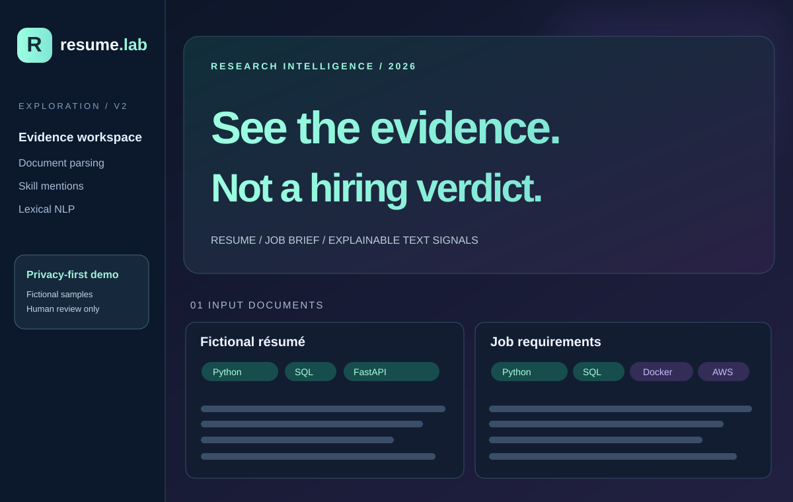

NLP / DOCUMENT ANALYSIS / RESEARCH DEMO · 2026
Resume Evidence Explorer V2.
A transparent text-evidence workspace for comparing a résumé against a job description. Built for exploration and human verification, not for ranking people or making hiring decisions.

Custom portfolio illustration inspired by the V2 interface. Not a captured screenshot or an actual candidate profile.
The problem
Traditional keyword-based résumé screens can be opaque and overconfident. V2 instead surfaces the actual terms and text excerpts supporting each observed skill mention, making it easier to inspect differences between documents without presenting an arbitrary suitability percentage.
What I built
A Streamlit workspace to compare a fictional résumé with a fictional job brief or analyze user-supplied PDF, DOCX or TXT documents. Features include explicitly matched and missing skill mentions, robust aliases and word boundaries, source-context snippets, shared lexical terms via TF-IDF and a downloadable, best-effort redacted JSON report.
Architecture and validation
Python, Streamlit, scikit-learn, pdfplumber, python-docx and Pandas power the standalone dashboard. A separate optional FastAPI endpoint supports local programmatic text exploration. GitHub Actions validates the code and test cases. No external AI API or third-party LLM is called by this application.
Privacy and limitations
Uploaded documents are processed in the cloud-hosted Streamlit instance, so users should only upload fictional/test material to the public demo. No database is configured to persist resumes, but server processing is still required. Redaction is best-effort and does not guarantee anonymity. Skill mentions do not prove proficiency, suitability, experience or even positive context. This is not an applicant-ranking or hiring decision system.